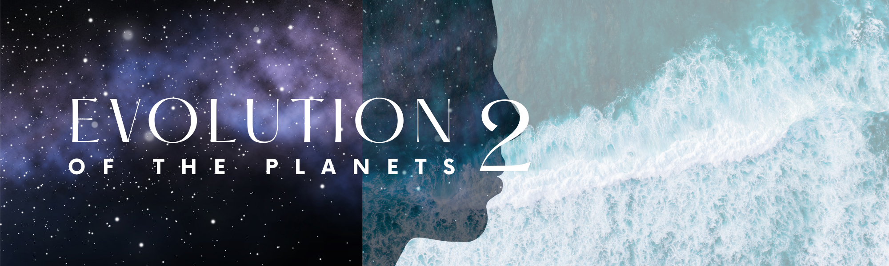
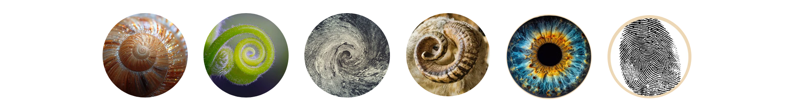
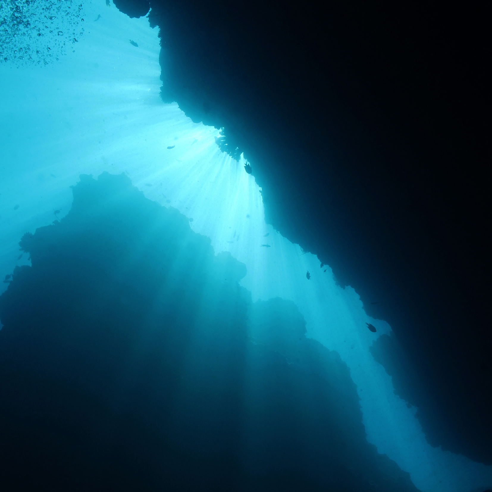
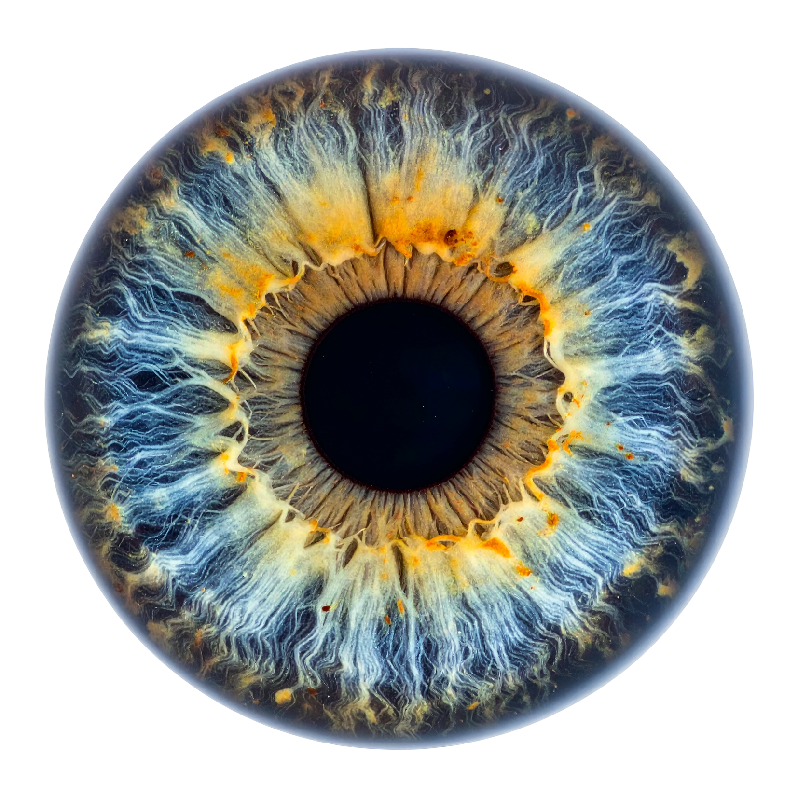
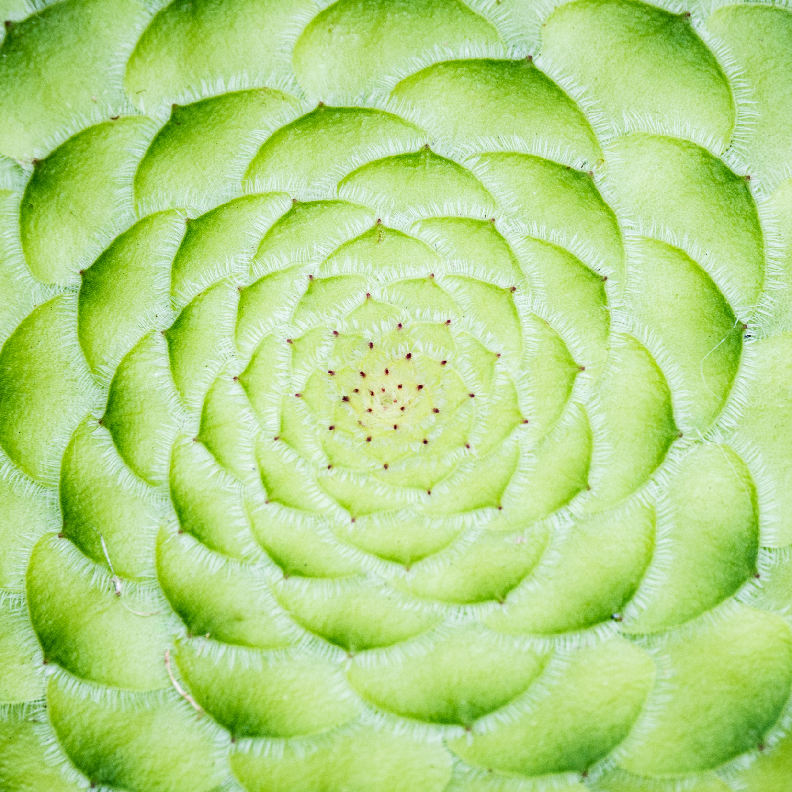
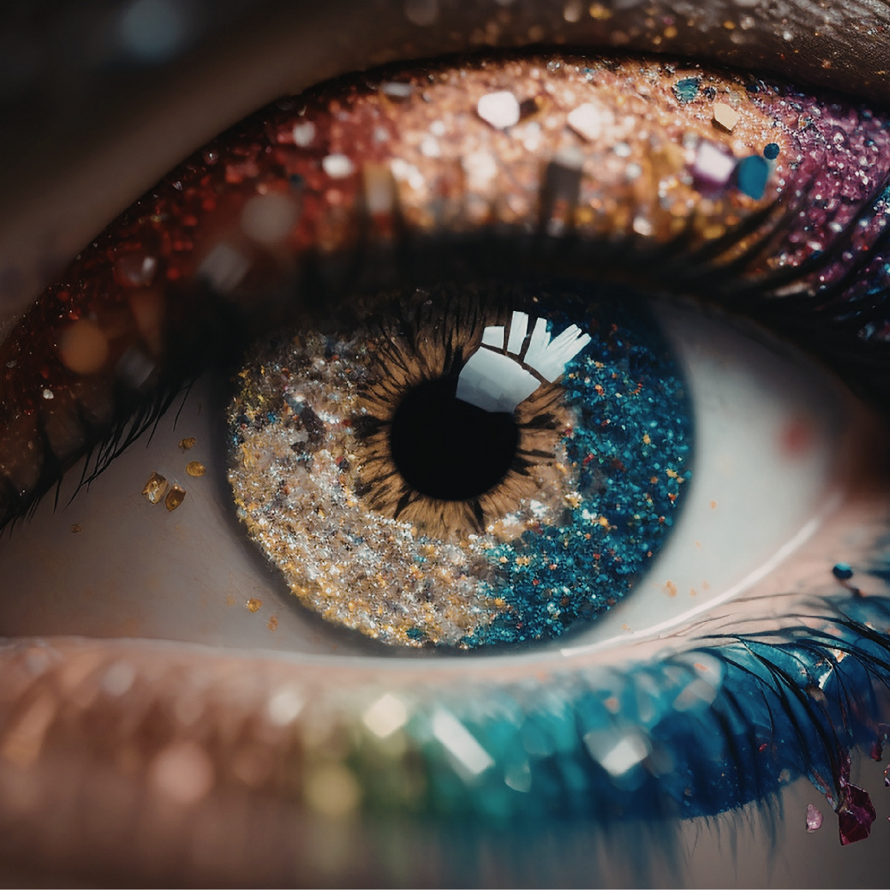
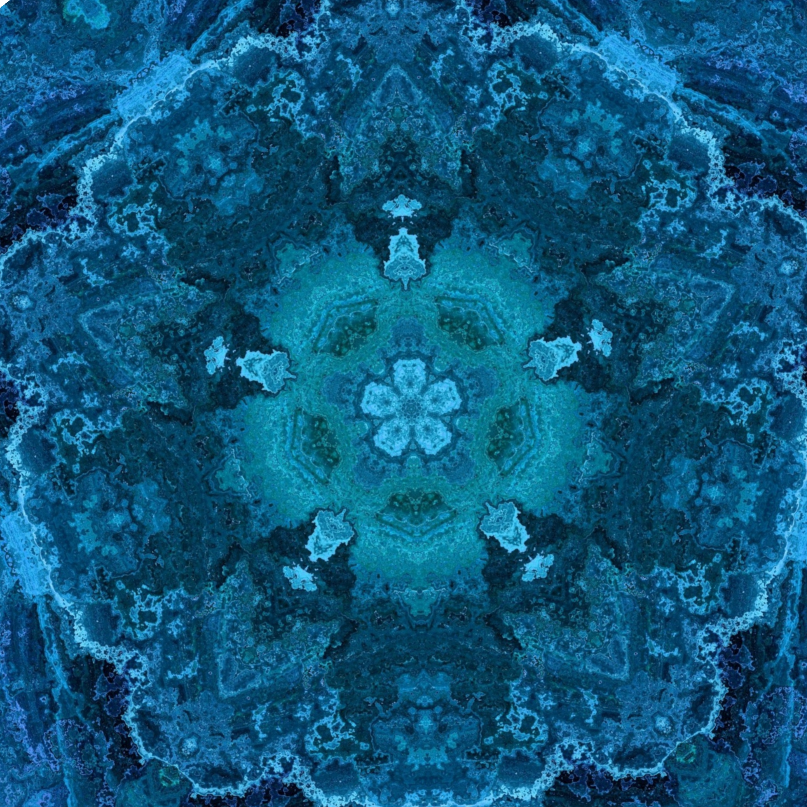
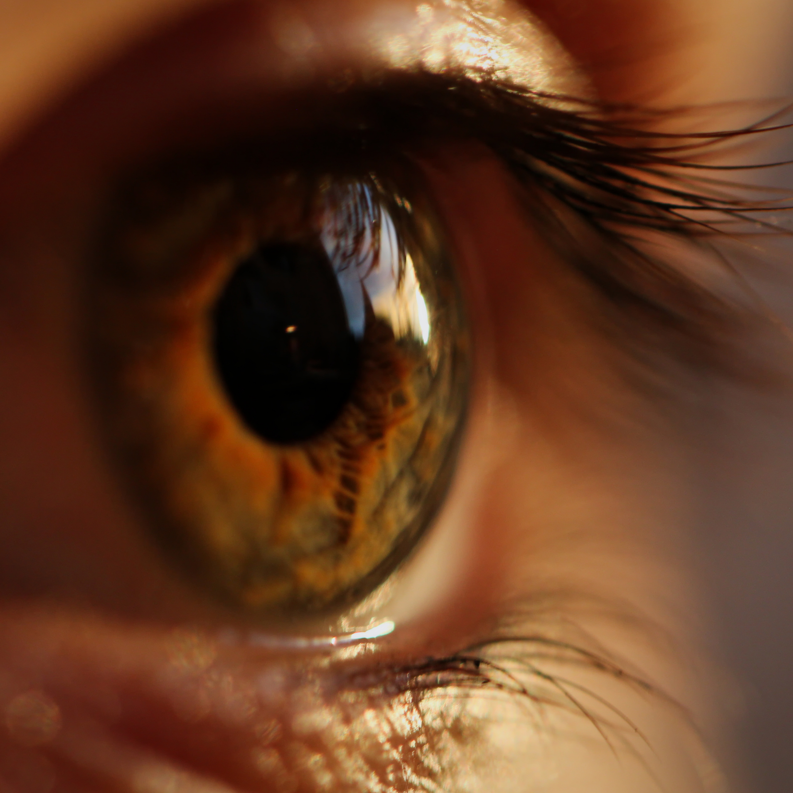
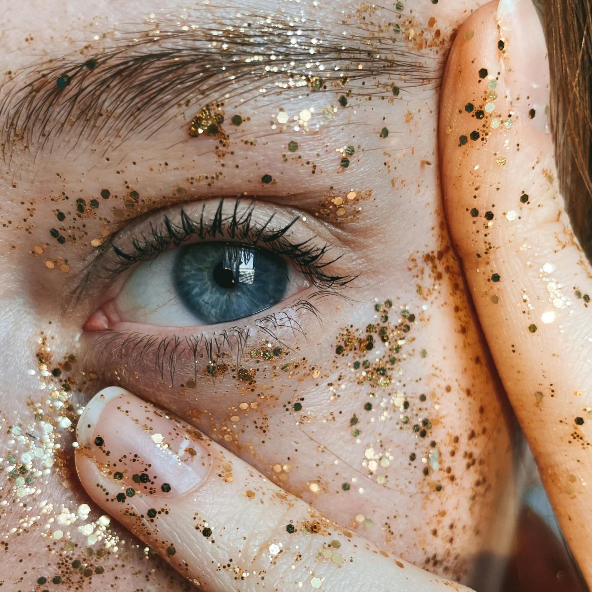

Dich entdecken. Das Universum entdecken.
Für alle, die sich selbst schon gut kennen und bereit sind für die nächste Tiefe. Von Oktober bis März gehst du durch fünf Kräfte, die über deine Persönlichkeit hinausgehen: Wandel, Sinn, Reife, Freiheit und Verschmelzung. Eine Gruppe, ein gemeinsamer Weg, mit einer stillen Winterzeit zum Einkehren.
EVOLUTION II – zur Anmeldung Start im Oktober. Ich öffne nur 6 Plätze, für eine wirklich persönliche Atmosphäre.Kennst du das?
Astrologie bleibt im Kopf. Du kennst die Deutungen, vielleicht ahnst du sie schon, bevor du nachliest. Aber im Körper, im Alltag, in echten Entscheidungen kommt davon oft wenig an.
Du brauchst nicht das nächste Reading, um mehr zu verstehen. Du weißt genug. Was du brauchst, ist die Verkörperung, damit dein kosmischer Bauplan konkret in deinem Leben sichtbar wird. Dafür steht EVOLUTION.
Bei EVOLUTION II sind es die Kräfte, die größer sind als du allein: Wandel, Sinn, Reife, Freiheit, Verschmelzung. Auch die zeigen sich in deinem Alltag, ganz praktisch. Du kommst in deine Kraft, lernst dich tiefer kennen, lieben und verstehen, beendest die inneren Kämpfe und bist einverstanden mit dem, was größer ist als du.
Du hinterfragst alles, schaust in die Tiefe und willst an den Kern, an die Wurzel von allem. Dein Motto lautet: Was steckt dahinter?
Das ist PLUTO in deinem ChartEs gibt etwas, das dir ganz leicht fällt. Du musst dich nicht anstrengen, es ist dein natürliches Talent. Und hier strebst du immer nach neuen Ufern, nach neuen Erkenntnissen.
Das ist JUPITER in deinem HoroskopDu hältst durch, wenn andere längst aufgegeben haben. Du übernimmst Verantwortung, auch wenn's unbequem wird. Dein Motto lautet: richtig, oder gar nicht.
Das ist SATURN in deinem ChartDu eckst an, wo andere sich anpassen. Du spürst sofort, wenn etwas nicht zu dir passt, auch wenn du es noch nicht aussprichst. Dein Motto lautet: Ich bin, wie ich bin.
Das ist URANUS in deinem ChartDu spürst, was andere fühlen, bevor sie es aussprechen. Stimmungen liest du wie andere Bücher. Dein Motto lautet: Ich fühle es einfach.
Das ist NEPTUN in deinem HoroskopDiese Kräfte wirken in jedem von uns, aber unterschiedlich stark ausgeprägt, unterschiedlich gewichtet. Manche begegnen dir stärker in deinem eigenen Leben, andere weniger stark, manchmal auch nur phasenweise, durch Transite. Aber dein Horoskop ist rund, und jede Energie möchte gelebt werden. Das ist ein Grundsatz der Astrologie.
Astrologie ist kosmische Psychologie.
(Gertrud I. Hürlimann)

Geerdete Astrologie
wie oben, so unten
wie innen, so außen
wie das Universum, so die Seele
Der Kosmos spiegelt sich in dir, und du spiegelst dich im Kosmos. Bei EVOLUTION II gehst du einen Schritt weiter: von dir hinein in das, was größer ist als du.
„Nichts ist, alles wird." (Heraklit)
Leben ist kein fester Zustand, sondern ein lebendiges Werden, eine fortwährende Entfaltung.
Astrologie ist so viel mehr als die „fancy" Sprache des Kosmos.
Mehr als ein Konzept aus Himmelskörperbewegungen.
Mehr als 12 Schubladen mit nettem Etikett.
Die Idee dahinter
Bei den fünf persönlichen Planeten ging es um dich: wie du handelst, liebst, denkst, fühlst und strahlst. Jetzt kommen die Kräfte dazu, die über deine Persönlichkeit hinausgehen. Sie verbinden dich mit deiner Generation, mit deinem überpersönlichen Auftrag, mit allem, was größer ist als du allein.
Schritt für Schritt gehst du weiter nach außen: durch Wandel, Sinn, Reife, Freiheit und Verschmelzung, mit einer ruhigen Winterpause zur Integration.
Dem Leben begegnen.
Die fünf Kräfte
Fünf große Lebensthemen. Wir widmen uns ihnen einem nach dem anderen, auch wenn sie sich in deinem eigenen Leben oft erst durch Transite oder einschneidende Momente zeigen, nicht auf Bestellung. Jedes auf drei Ebenen: wie es sich im Verborgenen hält, wie es sich zeigt, wenn die Zeit reif ist, und wie du lernst, liebevoll damit zu üben.

„Etwas in deinem Leben ist eigentlich schon vorbei. Nur du hältst es noch fest."
Manches bleibt lieber im Dunkeln. Du weichst aus, wo es zu tief, zu roh, zu unbequem wird, ganz automatisch, nicht aus Schwäche.
Meist ist es nicht dein Plan, der dich dorthin bringt. Eine Krise, ein Verlust, ein Transit, plötzlich steht das Thema mitten in deinem Leben, ungefragt.
Du lernst, dich diesen Wellen nicht entgegenzustellen. Mit jedem Mal ein bisschen sanfter, ein bisschen vertrauter, du gehst mit, statt zu kämpfen.
Berührt: Wandel, Tiefe, Krisen, das, was unter der Oberfläche wirkt. · Skorpion

„Du bleibst in dem, was du schon kennst. Dabei will ein Teil von dir längst wissen, was hinter dem nächsten Horizont liegt."
Du hältst dich manchmal kleiner, als dir guttut, aus Vorsicht, aus Gewohnheit, weil das Bekannte sich sicherer anfühlt als das große Ganze.
Dann kommt ein Moment, eine Einladung, eine Begegnung, eine Tür, die sich wie von selbst öffnet, und du merkst, wie viel größer dein Leben sein darf.
Du übst, dem Vertrauen mehr Raum zu geben als der Kontrolle. Nicht, weil du alles planst, sondern weil du lernst, dich tragen zu lassen.
Berührt: Sinn, Wachstum, Entdecken, das große Bild. · Schütze · mit Zeremonie

„Du weißt oft, was jetzt dran wäre. Manchmal fehlt dir nur der Mut, wirklich dazu zu stehen."
Du trägst manches allein, ohne es zu zeigen, aus Angst, als schwach zu gelten, wenn du um Hilfe bittest oder Grenzen ziehst.
Irgendwann wird es zu viel. Eine Erschöpfung, eine Enttäuschung, ein Punkt, an dem klar wird: So geht es nicht mehr weiter.
Du übst, dir selbst treu zu bleiben, auch wenn es unbequem ist. Nicht hart mit dir, sondern klar. Integrität wird zur Ruhe, nicht zur Last.
Berührt: Struktur, Verantwortung, Reife, Integrität. · Steinbock

„Du passt dich noch an, wo du eigentlich längst aus der Reihe tanzen willst."
Du machst dich klein, damit du dazugehörst, und ahnst doch, dass ein Teil von dir nicht ins Bild passt, das andere von dir haben.
Dann kommt ein Bruch, eine plötzliche Klarheit, ein Nein, das einfach da ist. Du merkst, wie anders du wirklich bist, ohne es dir ausgesucht zu haben.
Du übst, zu dem zu stehen, was dich einzigartig macht, auch wenn es aneckt. Nicht trotzig, sondern mit wachsender Selbstverständlichkeit.
Berührt: Freiheit, Individualität, Erwachen, dein eigener Weg. · Wassermann

„Du willst alles verstehen, festhalten, erklären können. Manches lässt sich nur fühlen."
Du hältst Abstand, wo du dich eigentlich fallen lassen könntest, aus Angst, dich zu verlieren, wenn du wirklich loslässt.
Dann gibt es Momente, in denen Kontrolle einfach nicht mehr trägt. Ein Gefühl, eine Verbindung, ein Traum, größer als das, was sich erklären lässt.
Du übst, dich diesem Fließen anzuvertrauen, immer wieder neu. Nicht als Kontrollverlust, sondern als eine andere Art, zu vertrauen.
Berührt: Vertrauen, Empathie, Verschmelzung, Intuition. · Fische · mit Zeremonie
So läuft Evolution II
Nach dem 9.12. wird es ruhig: keine Calls über Weihnachten und Neujahr, bis es am 13.1. mit SATURN weitergeht.
Für wen ist das?
Dein Zugang
Nur 6 Plätze
einmalig, für den ganzen Weg
oder in Raten: 6 × 405 €
+ Bei Anmeldung bis 3.10. ist eine 1:1 Session (45 Min.) mit mir für dich inklusive.
Für eine wirklich persönliche Atmosphäre in der Gruppe. Start im Oktober, der Weg läuft bis März.
Über mich
Astrologin, Beraterin und die Stimme hinter Astro mit Herz. Angefangen hat alles 2020 mit meinem eigenen Geburtshoroskop. Diese eine Deutung hat so viel in mir sortiert, dass ich seitdem nicht mehr mit der Astrologie aufhören konnte ;)
Ich habe Psychologische Astrologie an der DAV-zertifizierten Astropraxis Hamburg studiert und bin Fachmitglied im Schweizer Astrologenbund. Vor allem geht es mir darum, die Sprache des Kosmos auf die Erde zu übersetzen, leicht und lebendig, nicht als weiteres Konzept zum Grübeln.
In EVOLUTION fließt zusammen, was ich in den letzten Jahren gesammelt habe: meine Ausbildungen, Fortbildungen und Vorträge, meine eigene Erfahrung, mein ganz persönliches Verständnis von Astrologie.
Und dafür gibt es EVOLUTION II. Für den nächsten Schritt, in die Tiefe, in die Weite, und in ein tieferes Verständnis des Lebens.
Meine Art der Astrologie ist geerdet (Aszendent Stier), empathisch, feinfühlig, ein bisschen magisch und voller Intuition (Sonne in Fische), humorvoll und verbindet gerne große Zusammenhänge miteinander (Merkur im Wassermann). Genau das bekommst du bei mir: geerdete Klarheit mit Herzenswärme, und Klarheit ist das, was mir am häufigsten zurückgemeldet wird.

Teilnehmerstimmen bisheriger Programme
„Deine ruhige Art, die Inhalte verständlich rüber zu bringen und jederzeit persönliche Fragen ausführlich zu beantworten, gefällt mir sehr. Vielen, vielen Dank für deine super Arbeit!"
„Du schaffst es, komplexe Themen ganz klar und geerdet herunterzubrechen, mein Stier-AC liebt das! Durch deine Erklärungen fühle ich mich viel mehr zu Hause in der Astrologie und bin immer wieder fasziniert, was ich über mich entdecke."
„Ich bin auf Pia durch ihren Podcast aufmerksam geworden, der für mich im mittlerweile überfüllten Astro-Universum vor allem durch Qualität und super interessante Themen besticht. Pia verfügt über eine enorme Kompetenz und ein sehr fundiertes, tiefgründiges Wissen."
„Deine klare, verständliche Aufbereitung der Inhalte und deine Begeisterung für die Astrologie, die in deinen Seminaren immer mitschwingt, hilft mir besonders, die Themen zu verstehen und anzuwenden. Danke dafür."
Bevor du fragst
Ja. Es funktioniert in beiden Richtungen, dein Chart ist rund ;). In EVOLUTION II erkundest du die großen Lebensthemen, in EVOLUTION I die Basis.
Die Aufzeichnung und alle Materialien stehen dir dauerhaft zur Verfügung. Wenn es mal nicht klappt, kannst du in deinem Tempo nachschauen. Nur bei den Zeremonien bei JUPITER und NEPTUN gibt es keine Aufzeichnung, weil sich das Erleben nicht einfangen lässt.
Genau dann ist es relevant. EVOLUTION setzt nicht beim Wissen an, sondern bei der Umsetzung. Du arbeitest nicht daran, noch mehr zu verstehen, sondern daran, das, was du längst weißt, wirklich zu greifen und zu verkörpern. Geerdete Astrologie :)
Grundkenntnisse in Astrologie sind sinnvoll. Du musst keine komplette Ausbildung absolviert haben, aber die Grundbegriffe, Planeten und Tierkreiszeichen, solltest du kennen. EVOLUTION II richtet sich an Menschen, die bereits ein Grundverständnis mitbringen und tiefer gehen wollen. Vor allem brauchst du Neugier und Offenheit, für Astrologie und für dich selbst.
Der Unterschied liegt in der Struktur und Kombination aller Puzzleteile. Du arbeitest nicht nur mit Erkenntnis, sondern mit einem klaren System: die Ebenen der Planeten, wie bewusst du sie gerade lebst, und die konkrete Anwendung in deinem Alltag, damit sich wirklich etwas verändert und nicht nur noch mehr Verständnis im Kopf entsteht. Da liegt der Anfang, aber dann geht es weiter.
Puzzleteile verbinden, ein großes Bild erstellen, und ein Gefühl für dich und dein Sein bekommen, für das, was größer ist als du. Nicht, dich noch besser zu analysieren (das kannst du schon ;)). Sondern dich so zu verbinden, dass du dich anders erlebst: mehr Klarheit, mehr bewusste Entscheidungen, mehr Gefühl für das, was dich trägt.
Unbegrenzt. Du kannst alle Aufzeichnungen jederzeit wieder anschauen, dazu bekommst du Übersichten als PDF.
Nein. Astrologie ist die Grundlage, aber es geht nicht darum, noch mehr Inhalte zu lernen. Im Fokus steht, wie sich die transpersonalen Kräfte konkret in deinem Alltag zeigen und wie du beginnst, sie bewusst zu leben.
